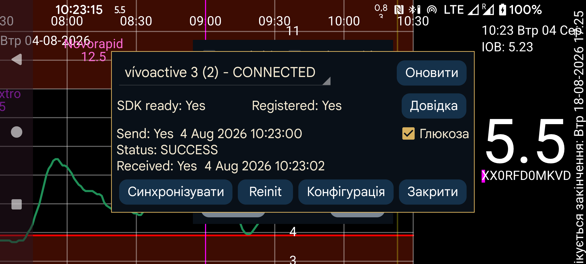

ar be de es fr hi it ja nl pl pt ru tr uk uz zh en

Kerfstok (https://apps.garmin.com/en-US/apps/b6348ccc-86d8-4780-8013-d9e19fed5260 ; див. також https://www.juggluco.nl/Kerfstok/index.html) — це програма для спортивних годинників Garmin, які підтримують сторонні програми. Починаючи з версії 1.6.0 вона працює і на годинниках без сенсорного екрана. Kerfstok дає змогу:
вводити числа й обмінюватися ними з Juggluco;
показувати потокове значення глюкози, отримане від Juggluco;
показувати це значення глюкози під час занять спортом разом зі швидкістю та відстанню. Активність записується й може відображатися в програмі Garmin Connect.
Ця програма на годиннику може підключатися до Juggluco через Bluetooth, обмінюватися введеними значеннями й постійно показувати поточну глюкозу.
УСУНЕННЯ НЕСПРАВНОСТЕЙ:
Спочатку біля назви годинника має бути показано «З’єднано». Якщо ні, усуньте проблему в програмі Garmin Connect. Потім запустіть Kerfstok на годиннику.
Іноді зв'язок між годинником і телефоном порушується.
Якщо стан надсилання — FAILURE_DURING_TRANSFER, виконайте одну або кілька таких дій:
— вимкніть і знову ввімкніть Bluetooth, а потім натисніть Reinit;
- Перезавантажте годинник (майже завжди успішно, але іноді це потрібно зробити кілька разів);
- Перезавантажте телефон (останній варіант).
За інших проблем може допомогти примусове зупинення Garmin Connect, повторний запуск і натискання «Reinit».
Якщо з’єднання працює, але введені значення на годиннику й телефоні з якоїсь причини не синхронізовані, натисніть Синхронізувати,щоб обидва пристрої надіслали один одному ще не передані числа.
Іноді з’являється кнопка «Надіслати чергу», що означає наявність повідомлень, які ще не надіслано на годинник. Зазвичай вони надсилаються автоматично, але якщо процес було перервано, натискання Надіслати чергу продовжує передавання. Якщо причиною є розірване з’єднання, це майже не допоможе. Натискання Надіслати чергу під час поточної транзакції може розірвати з’єднання.
Іноді після появи «Надіслати чергу» проблема з’єднання дає змогу передавати повідомлення лише з телефона на годинник, але не навпаки. Це так, коли час після «Отримано» давніший за час після «Надіслано». Щоб виправити ситуацію, виконайте одну або кілька з таких дій, за потреби кілька разів:
натисніть «Reinit»;
примусово зупиніть Garmin Connect, запустіть її знову й натисніть «Reinit»;
вимкніть і знову ввімкніть Bluetooth;
перезапустіть годинник;
перезапустіть телефон.
Кілька разів проблеми зі з’єднанням залишалися навіть після цих дій, але їх усувало перевстановлення Garmin Connect або очищення сховища в інформації про програму Garmin Connect із подальшим повторним запуском. Оскільки Garmin Connect зберігає дані на інтернет-сервері, програму можна перевстановити без втрати даних. Після очищення даних мені навіть не довелося входити знову — лише надати багато дозволів.
Оновити оновлює цей діалог новими відомостями, наприклад після переініціалізації або синхронізації.
Перевірка «Глюкоза» визначає, чи надсилаються значення глюкози на годинник.
Конфігурація: Dark mode, Ярлики та ID.
УВАГА: Juggluco може працювати лише з одним Kerfstok. Не можна підключити Juggluco до Kerfstok на кількох годинниках або одночасно на годиннику й велокомп’ютері.